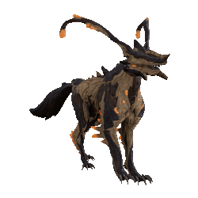

Compagnons
Les compagnons se distinguent surtout par les mods de compagnon qui leurs sont exclusifs, ainsi que l'accès à différentes armes. Pensez à récupérer les mods prioritaires parmi les mods listés dans Mods.
Ils complètent vos builds via différents bonus :
- utilitaire : double-loot, énergie, CC
Utilitaire pets : détails
- aspirateur ressources (Vacuum / Fetch)
- Radar ennemis / ressources (Animal Instinct / Primed Animal Instinct
- boost loots ressources / crédits
- survivabilité
- génération d'énergie : Synth Deconstruct / Dig / Energy Generator / Archon Stretch + Arc Coil ou mod de griffe electrique
- contrôle :
- compétences : Arc Coil du Diriga
- armes : Tazicor + Duplex Bond + statut CC (feu / froid / électrique)
- priming
- anti-status
- etc...
- DPS
DPS pets : détails
- DPS des compagnons en eux-mêmes
- Buff des armes warframe :
- Tenacious Bond +1.2x crit dmg
- compatibles :
- tous compagnons animaux avec Bite voire Hunter Synergy si besoin
- armes sentinelles SANS riven : Prime Laser Rifle, Vulcax, Vulklok, Burst Laser Prime
- armes sentinelles AVEC riven : Verglas Prime
- compatibles :
- Reinforced Bond +60% firerate
- ne pas compter sur la recharge interne au mod pour dépasser les 1200 : buggé si vous n'êtes pas hôte dans une partie
- compagnons dépassant 1200 shields avec Calculated Redirection : Wyrm Prime, Nautilus Prime, Huras Kubrow, Raksa Kubrow, Sunika Kubrow, tous les vulpaphylas et Predasites, tous les Moa/Hounds avec des parts orientées shield
- Tenacious Bond +1.2x crit dmg
Compagnons : Essentiels
La base, ceux à build/utiliser en priorité. Des compagnons AoE avec des capacités de survie qui aident énormément. Un Aoe + Synth Deconstruct permet de générer des orbes de santé, et de l'énergie si ta frame a Equilibrium ou une shard violette.
Panzer Vulpaphyla

Panzer : avantages
- envoie du viral partout (Viral Quills / Panzer Devolution)
- empêche parfois de mourir (Martyr Simbiosis)
- compagnon animal donc peut utiliser les mods "Récupérateur / Retriever" pour booster ton farm
Panzer : obtention
lorem
Panzer : build
Diriga

Diriga : avantages
- stun électrique de zone avec Arc Coil
- peut embarquer "Guardien" pour regen tes boucliers
- prendre arme avec plein de statuts pour infliger des statuts avec Manifold Bond (priming)
-
diriga : arme conseillée
- Prime Laser Rifle, a tous les statuts melee Impact Puncture Slash + peu avoir facilement +50% crit pour débloquer Tenacious Bond
- ou juste un Verglas viral/feu pour exploser les ennemis (ou nuke une salle avec Contagious + Manifold + Momentous Bond)
Diriga : obtention
lorem
Diriga : build
Kavat Vasca

Vasca : avantages
- bonne sécurité (rez via Transfusion)
- très bons dégâts qui permettent de générer des orbes d'énergie via Duplex Bond
- accès mods Récupérateurs
- accès mod Kavat Swipe pour un peu d'aoe : + de dps & compatibilité avec Synth Deconstruct
Vasca : obtention
lorem
Vasca : build
Compagnons : notables
Moins polyvalents que les Essentiels, ils peuvent compléter un build ou remplir une fonction particulière via leurs capacités de niche.
Kavat Smeeta : ne fournit PLUS DE BUFF RESSOURCES
Cela a été exporté et généralisé sur des mods Récupérateur pour tous les compagnons animaux.
- Nautilus Prime : groupage auto des ennemis avec Cordon, donne accès à l'arme de sentinelle Verglas Prime très forte en viral/feu
- Kavat Smeeta : buffs aléatoires via Charm. Essentiellement utilisé pour le buff 300% affinité/XP.
- Hounds de liche Tenet : Grosse capacité de DPS/Nuke AoE + mods utilitaires de niche + accès mods robotiques (Guardian)
- Kubrow Huras : invisibilité partielle (Stalk + DPS (stat-stick Paris Prime Incarnon + Hunter Synergy + Mecha Overdrive + griffes slash/feu crit)
- Shade Prime : invisbilité partielle (Ghost), meurt moins souvent que le Huras car moins d'aggro / suit la frame
- Dethcube Prime : génération d'énergie (Energy Generator)
- Wyrm Prime : retrait auto des status reçus via Negate, très bon ajout de survivabilité
Compagnons : niches
Ne sont pas inutiles mais beaucoup moins polyvalents que les autres compagnons. A réserver aux experts.
- Pharaoh Predasite : +100% dégâts toxin sur vos armes (qui ne se fusionnent pas avec vos mods) via Anabolic Pollination
- Adarza Kavat : fournit 60% de crits finaux avec Cat's Eye, stack en plus des crit de l'arme en dehors du fonctionnement des mods, donne toujours 60% au total (comme Arcane Avenger qui en donne 45%). Très bon sur des armes ayant peu de crit de base difficile à augmenter via des mods.
- Chesa Kubrow : donne une chance de loot supplémentaire sur les corps avec Retrieve (fonctionne un peu comme Nekros). Utilisé pour l'ouverture d'apothiques.
- Raksa Kubrow : rend des shields + augmente la regen shield via Protect. Scale avec ses propres shields donc une frame avec plein de shields + Link Redirection : top avec Hildryn
- Oxylus : scan auto des plantes pour les apothiques (Botanist, bon pour le farm passif si vous rushez les maps en relique (déconseillé pour la pêche/minage malgré ses préceptes, mieux vaut prendre un animal qui peut équiper un mod récupérateur et doubles les ressources)
- Helios Prime : scan automatique pour le codex (Investigator + accès à une arme glaive/melee Deconstructor
- Kubrow Sahasa : fournit des munitions et orbes d'énergie via Dig
- Carrier Prime : fournit des munitions via Ammo Case
- Sly Vulpaphyla : booste la survie avec le mod Survival Instinct qui permet de reset l'aggro ennemie. A aussi accès aux mods généraux de Vulpa comme Martyr Simbiosis
- Moa : peuvent équiper les armes de sentinelle (Verglas Prime, Tazicor), utiliser les mods robotiques (Guardian) et ont des mods utilitaire de niche. Mods notables : survie pet Blast Shield, groupage Whiplash Mine, tanking/défense de zone Stasis Field, auto-hack Security Override (permet de hack à travers des vitres via Master's Summons)